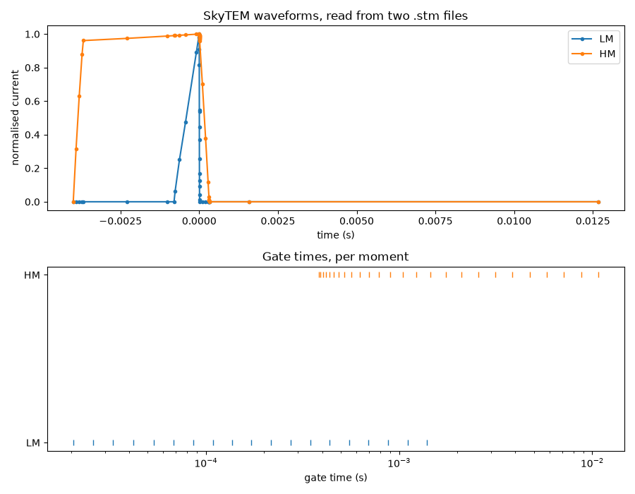

Note
Go to the end to download the full example code.
Systems (YAML, GA-AEM .stm, templates)
Where a system definition comes from.
A GSPy System says what recorded the data: the transmitters, the receivers, the
couplets pairing them, and the gate times or frequencies the data is sampled at.
There are three ways to get one, and this example works through all of them:
From a YAML file you have already written -
System.open().From a GA-AEM ``.stm`` file, the system file GALEISBSTDEM forward models with -
System.from_stm(). Both flavours are read: theSystem Beginblock a time domain system is written as, and the table of coil pairs a frequency domain system is written as.From a template for the method family, to fill in by hand -
System.metadata_template().
The three mix. A .stm is a forward modelling file rather than a system
description, so it answers what it can and the rest is left as template
placeholders reading ?? what goes here ?? - hand it a YAML alongside, or dump
what it knows to a template and finish the job by hand.
from os.path import join
import matplotlib.pyplot as plt
import numpy as np
from gspy import Survey, System
system_path = join('..', 'data_files', 'systems')
def placeholders(system):
"""The fields nothing has answered yet."""
return [name for name in system.data_vars if '??' in str(system[name].values)]
A system is described per method family
Each family names the fields that method uses. This is the vocabulary every route below ends up speaking, whichever file it started from.
print(System.templates())
('fdem', 'magnetic', 'radiometric', 'tdem')
From a YAML file
The ordinary case: a file holding one system, under a key with “system” in it.
resolve = System.open(join(system_path, 'Resolve_system.yml'))
print(resolve)
<xarray.Dataset> Size: 2kB
Dimensions: (channel: 2, frequency: 6, n_transmitter: 6,
n_receiver: 6, n_couplet: 6)
Coordinates:
* channel (channel) <U10 80B 'in-phase' 'quadrature'
* frequency (frequency) int64 48B 400 1800 ... 40000 140000
* n_transmitter (n_transmitter) int64 48B 0 1 2 3 4 5
* n_receiver (n_receiver) int64 48B 0 1 2 3 4 5
* n_couplet (n_couplet) int64 48B 0 1 2 3 4 5
Data variables: (12/17)
transmitter_label (n_transmitter) <U7 168B '400Z' ... '140000Z'
transmitter_orientation (n_transmitter) <U1 24B 'z' 'z' 'x' 'z' 'z' 'z'
receiver_label (n_receiver) <U7 168B '400Z' '1800Z' ... '140000Z'
receiver_orientation (n_receiver) <U1 24B 'z' 'z' 'x' 'z' 'z' 'z'
couplet_label (n_couplet) <U15 360B '400Z_400Z' ... '140000Z_...
couplet_transmitters (n_couplet) <U7 168B '400Z' '1800Z' ... '140000Z'
... ...
couplet_actual_frequency (n_couplet) int64 48B 381 1829 ... 40430 133400
couplet_moment (n_couplet) int64 48B 359 187 150 72 49 17
data_normalized bool 1B True
output_data_type <U3 12B 'ppm'
reference_frame <U24 96B 'right-handed positive up'
output_sample_frequency int64 8B 10
Attributes:
type: system
mode: airborne
method: electromagnetic, frequency domain
instrument: RESOLVE
name: resolve_system
A file written for a dataset often holds several systems - the electromagnetic system and the magnetometer that flew with it. Name the one you want.
skytem_md = join('..', 'data_files', 'skytem_csv', 'data', 'skytem_system.yml')
magnetometer = System.open(skytem_md, name='magnetic_system')
print(magnetometer['receiver_label'].values)
['scalar_magnetometer']
From a GA-AEM .stm file, frequency domain
A frequency domain .stm is a table with a row per coil pair: the frequency,
then the orientation, moment and position of the transmitting and receiving
dipole.
1freq, tor, tmom, tx, ty, tzoff, ror, rmom, rx, ry, rzoff
2380, z, 1, 0, 0, 0, z, 1, 7.93, 0, 0
31776, z, 1, 0, 0, 0, z, 1, 7.91, 0, 0
43345, x, -1, 0, 0, 0, x, 1, 9.03, 0, 0
58171, z, 1, 0, 0, 0, z, 1, 7.91, 0, 0
641020, z, 1, 0, 0, 0, z, 1, 7.91, 0, 0
7129550, z, 1, 0, 0, 0, z, 1, 7.89, 0, 0
resolve_stm = System.from_stm(join(system_path, 'Resolve.stm'))
The coil labels come from the frequency and orientation of each pair, the
frequencies become the frequency dimension, and the separations are the
receiver position less the transmitter position.
print(resolve_stm['transmitter_label'].values)
print(resolve_stm['frequency'].values)
print(resolve_stm['couplet_txrx_dx'].values)
['380Z' '1776Z' '3345X' '8171Z' '41020Z' '129550Z']
[ 380 1776 3345 8171 41020 129550]
[7.93 7.91 9.03 7.91 7.91 7.89]
Coplanar or coaxial is worked out from the pair of orientations.
print(resolve_stm['couplet_orientation'].values)
['coplanar' 'coplanar' 'coaxial' 'coplanar' 'coplanar' 'coplanar']
From a GA-AEM .stm file, time domain
A time domain .stm is a nest of Name Begin … Name End blocks. The
waveform and the gate times are tables of unkeyed numbers inside them.
1System Begin
2 Name = Tempest-30.0Hz
3 Type = Time Domain
4
5 Transmitter Begin
6 NumberOfTurns = 1
7 PeakCurrent = 0.5
8 LoopArea = 1
9 BaseFrequency = 30
10 WaveFormCurrent Begin
11 -0.0166666667 0.0
12 -0.0166612413 1.0
13 -0.0000054255 1.0
14 0.0000000000 0.0
15 0.0000054255 -1.0
16 0.0166612413 -1.0
17 0.0166666667 0.0
18 WaveFormCurrent End
19 WaveformDigitisingFrequency = 1200000
20 Transmitter End
21
22 Receiver Begin
23
24 NumberOfWindows = 15
25 WindowWeightingScheme = Boxcar
26
27 WindowTimes Begin
28 0.00000543 0.00001628
29 0.00002713 0.00003798
30 0.00004883 0.00005968
31 0.00007053 0.00010308
32 0.00011394 0.00016819
33 0.00017904 0.00027670
34 0.00028755 0.00045032
35 0.00046117 0.00071074
36 0.00072159 0.00110138
37 0.00111223 0.00170903
38 0.00171988 0.00266392
39 0.00267477 0.00416136
40 0.00417221 0.00650517
41 0.00651603 0.01008600
42 0.01009686 0.01666171
43 WindowTimes End
44
45 Receiver End
46
47 ForwardModelling Begin
48
49 OutputType = B
50
51 XOutputScaling = 1e15
52 YOutputScaling = 0.0
53 ZOutputScaling = 1e15
54 SecondaryFieldNormalisation = none
55
56 FrequenciesPerDecade = 6
57 NumberOfAbsiccaInHankelTransformEvaluation = 21
58
59 ForwardModelling End
60
61System End
tempest_stm = System.from_stm(join(system_path, 'Tempest.stm'))
The gate times arrive as bounds, because that is what the file states, and the centres are their midpoints. Which receivers there are is read from the components the file scales its output by, at the bottom of the file.
print(tempest_stm['gate_times'].values[:4])
print(tempest_stm['receiver_label'].values)
print(tempest_stm['couplet_label'].values)
[1.0855e-05 3.2555e-05 5.4255e-05 8.6805e-05]
['x' 'z']
['transmitter_1_x' 'transmitter_1_z']
Several .stm files, one dual moment system
GA-AEM writes a moment per file, so a dual moment system is two files. Give
them as {transmitter label: file} and they become the two transmitters of
one system, in the order given.
moments = {'LM': join(system_path, 'SkytemLM.stm'),
'HM': join(system_path, 'SkytemHM.stm')}
skytem_stm = System.from_stm(moments)
These two files only scale their output by z, so one receiving coil is what is read from them. If the aircraft carried a coil the forward model did not use, say so - the extra coil’s fields become placeholders to fill in.
print(skytem_stm['receiver_label'].values)
print(System.from_stm(moments, receivers=['z', 'x'])['couplet_label'].values)
['z']
['LM_z' 'HM_z' 'LM_x' 'HM_x']
Each moment brings its own gate times, named after the transmitter they belong to, and the couplets point at the right ones.
print([d for d in skytem_stm.sizes if 'gate_times' in d])
print(skytem_stm['couplet_gate_times'].values)
['lm_gate_times', 'hm_gate_times']
['lm_gate_times' 'hm_gate_times']
The two waveforms are interpolated onto one shared time axis, since
waveform_current is stated per transmitter over a common waveform_time.
A transmitter reads as zero outside its own span.
fig, ax = plt.subplots(2, 1, figsize=(9, 7))
for i, label in enumerate(skytem_stm['transmitter_label'].values):
ax[0].plot(skytem_stm['waveform_time'].values,
skytem_stm['transmitter_waveform_current'].values[i, :],
marker='.', label=label)
ax[0].set(xlabel='time (s)', ylabel='normalised current',
title='SkyTEM waveforms, read from two .stm files')
ax[0].legend()
for label, dimension in zip(skytem_stm['transmitter_label'].values,
['lm_gate_times', 'hm_gate_times']):
gates = skytem_stm[dimension].values
ax[1].semilogx(gates, np.full(gates.size, label), marker='|', linestyle='none')
ax[1].set(xlabel='gate time (s)', title='Gate times, per moment')
plt.tight_layout()

What a .stm cannot say
Plenty. The format describes an airborne dipole for a forward model, so the mode is airborne and there is no loop geometry to ask for, but nothing in it says what instrument flew, how many transients were stacked, or what the receiver coils were.
print(placeholders(tempest_stm))
['transmitter_number_of_turns', 'transmitter_area', 'transmitter_waveform_type', 'transmitter_current_scale_factor', 'transmitter_peak_current', 'transmitter_moment', 'transmitter_peak_moment', 'transmitter_on_time', 'transmitter_off_time', 'transmitter_height', 'receiver_area', 'receiver_coil_low_pass_filter', 'receiver_instrument_low_pass_filter', 'receiver_delay_time', 'receiver_gain', 'receiver_height', 'couplet_txrx_dx', 'couplet_txrx_dy', 'couplet_txrx_dz', 'couplet_sample_rate', 'reference_frame', 'output_sample_frequency', 'sample_rate', 'stacks', 'powerline_frequency']
GA-AEM also normalises the loop away, writing one turn of one square metre carrying one amp with the data scaled to match. Importing that would claim a 1 m^2 single turn loop, so it is flagged instead and the loop left placeheld.
print(tempest_stm['data_normalized'].values)
True
Nothing read is thrown away, though. Anything in the file that GSPy has no
field for is kept in the attributes under stm_, the normalised loop
included, so the file can be reconstructed from the system.
for key, value in tempest_stm.attrs.items():
if key.startswith('stm_'):
print(f"{key}: {value}")
stm_file: Tempest.stm
stm_name: Tempest-30.0Hz
stm_transmitter_number_of_turns: 1
stm_transmitter_peak_current: 0.5
stm_transmitter_loop_area: 1
stm_receiver_window_weighting_scheme: Boxcar
stm_forward_modelling_secondary_field_normalisation: none
stm_forward_modelling_frequencies_per_decade: 6
stm_forward_modelling_number_of_absicca_in_hankel_transform_evaluation: 21
Dump what the file knows, fill in the rest by hand
System.metadata_from_stm() gives the metadata rather than the built
system, so it can be written out as a template: the imported values are real,
and what the file could not say is still a placeholder to answer.
metadata = System.metadata_from_stm(join(system_path, 'Tempest.stm'))
metadata.dump("template_md_stm_tempest.yml")
1tdem_system:
2 type: system
3 mode: airborne
4 method: electromagnetic, time domain
5 instrument: ?? make and model, e.g. SkyTEM 304M ??
6 dimensions:
7 gate_times:
8 standard_name: gate_times
9 long_name: gate times
10 units: seconds
11 missing_value: not_defined
12 centers: [1.0855e-05, 3.2555e-05, 5.4255e-05, 8.680499999999999e-05, 0.000141065, 0.00022787, 0.00036893500000000003, 0.000585955, 0.000911485, 0.00141063, 0.0021919, 0.003418065, 0.00533869, 0.008301015, 0.013379285]
13 bounds: [[5.43e-06, 1.628e-05], [2.713e-05, 3.798e-05], [4.883e-05, 5.968e-05], [7.053e-05, 0.00010308], [0.00011394, 0.00016819], [0.00017904, 0.0002767], [0.00028755, 0.00045032], [0.00046117, 0.00071074], [0.00072159, 0.00110138], [0.00111223, 0.00170903], [0.00171988, 0.00266392], [0.00267477, 0.00416136], [0.00417221, 0.00650517], [0.00651603, 0.010086], [0.01009686, 0.01666171]]
14 variables:
15 data_normalized: True
16 reference_frame: ?? e.g. right-handed positive down ??
17 output_data_type: B
18 output_sample_frequency: ?? Hz, of the delivered data ??
19 sample_rate: ?? seconds per sounding ??
20 digitization_frequency: 1200000
21 stacks: ?? how many transients were stacked ??
22 powerline_frequency: ?? Hz, 50 or 60 ??
23 transmitter:
24 label: transmitter_1
25 number_of_turns: ?? turns of wire in the loop ??
26 area: ?? loop area, m^2 ??
27 orientation: z
28 waveform_type: ?? e.g. trapezoid or square ??
29 waveform_time:
30 values: [-0.0166666667, -0.0166612413, -5.4255e-06, 0.0, 5.4255e-06, 0.0166612413, 0.0166666667]
31 long_name: waveform time
32 units: s
33 missing_value: not_defined
34 waveform_current:
35 values: [[0.0, 1.0, 1.0, 0.0, -1.0, -1.0, 0.0]]
36 dimensions: ['n_transmitter', 'waveform_time']
37 current_scale_factor: ?? multiplier taking the normalised waveform to amps ??
38 peak_current: ?? amps ??
39 moment: ?? A m^2 ??
40 peak_moment: ?? A m^2 at peak current ??
41 base_frequency: 30
42 on_time: ?? seconds ??
43 off_time: ?? seconds ??
44 height: ?? metres above ground ??
45 receiver:
46 label: ['x', 'z']
47 orientation: ['x', 'z']
48 area:
49 values: ['?? effective coil area, m^2 ??', '?? effective coil area, m^2 ??']
50 units: m^2
51 coil_low_pass_filter: ['?? Hz ??', '?? Hz ??']
52 instrument_low_pass_filter: ['?? Hz ??', '?? Hz ??']
53 delay_time: ['?? seconds between transmitter off and the first gate ??', '?? seconds between transmitter off and the first gate ??']
54 gain: ['?? amplifier gain ??', '?? amplifier gain ??']
55 height: ['?? metres above ground ??', '?? metres above ground ??']
56 couplet:
57 transmitters: ['transmitter_1', 'transmitter_1']
58 receivers: ['x', 'z']
59 txrx_dx: ['?? metres from transmitter to receiver, along the line ??', '?? metres from transmitter to receiver, along the line ??']
60 txrx_dy: ['?? metres from transmitter to receiver, across the line ??', '?? metres from transmitter to receiver, across the line ??']
61 txrx_dz: ['?? metres from transmitter to receiver, vertical ??', '?? metres from transmitter to receiver, vertical ??']
62 data_type: ['B', 'B']
63 sample_rate: ['?? seconds per sounding ??', '?? seconds per sounding ??']
64 gate_times: ['gate_times', 'gate_times']
65 stm_file: Tempest.stm
66 stm_name: Tempest-30.0Hz
67 stm_transmitter_number_of_turns: 1
68 stm_transmitter_peak_current: 0.5
69 stm_transmitter_loop_area: 1
70 stm_receiver_window_weighting_scheme: Boxcar
71 stm_forward_modelling_secondary_field_normalisation: none
72 stm_forward_modelling_frequencies_per_decade: 6
73 stm_forward_modelling_number_of_absicca_in_hankel_transform_evaluation: 21
Filled in, it reads straight back.
print(System.open("template_md_stm_tempest.yml").attrs['method'])
electromagnetic, time domain
A .stm and a YAML together
The other way round: keep a small YAML holding only what the file cannot say,
and let the .stm supply the waveform, the gate times and the geometry.
1## What Tempest.stm cannot say.
2#
3# A .stm is a forward modelling file: it holds the waveform, the gate times and
4# the geometry a forward model needs, and nothing about the aircraft that flew or
5# the loop that was actually built. Everything here is a field the format has no
6# place for, or one it normalised away - the loop is written as one turn of one
7# square metre carrying one amp, with the data scaled to match.
8
9tempest_system:
10 instrument: 30Hz Tempest
11
12 variables:
13 reference_frame: right-handed positive up
14 output_sample_frequency: 5
15
16 transmitter:
17 area: 155
18 number_of_turns: 1
19 peak_current: 560
20 peak_moment: 86800
21 waveform_type: square
22 current_scale_factor: 0.5
23 on_time: 0.00833
24 off_time: 0.00833
25
26 couplet:
27 txrx_dx: [-120, -120]
28 txrx_dy: [0, 0]
29 txrx_dz: [-52, -52]
tempest = System.from_stm(join(system_path, 'Tempest.stm'),
metadata=join(system_path, 'Tempest_stm_extras.yml'))
The YAML wins wherever the two overlap, so it can correct the file as well as add to it - here it puts the real loop back over the normalised one.
print(tempest.attrs['instrument'])
print(tempest['transmitter_area'].values, tempest['transmitter_peak_current'].values)
print(tempest['couplet_txrx_dz'].values)
30Hz Tempest
[155] [560]
[-52 -52]
What is left placeheld is what neither source knows. Answer those, or delete the fields this system does not have, and the definition is finished.
print(placeholders(tempest))
['transmitter_moment', 'transmitter_height', 'receiver_area', 'receiver_coil_low_pass_filter', 'receiver_instrument_low_pass_filter', 'receiver_delay_time', 'receiver_gain', 'receiver_height', 'couplet_sample_rate', 'sample_rate', 'stacks', 'powerline_frequency']
From a template alone
With no file to start from, ask for the family and the shape. See Help! I have no metadata for more on templates.
template = System.metadata_template('tdem', name='skytem_system',
transmitters=['LM', 'HM'], receivers=['z', 'x'])
print(list(template['skytem_system']['dimensions']))
['lm_gate_times', 'hm_gate_times', 'n_loop_vertices', 'xyz']
Attaching one to the data it recorded
Whichever route built it, a system is handed to the dataset it recorded as that
dataset is added. System.metadata_from_stm() returns the metadata under
its own name, which is the shape system expects.
The labels matter here. A variable in the data file points at the couplet that
measured it by name, so label the transmitter the way the data file writes it -
a bare .stm does not name its own transmitter, and would be indexed
transmitter_1 instead.
tempest_path = join('..', 'data_files', 'tempest_aseg', 'data')
survey = Survey.from_dict(join(tempest_path, 'Tempest_survey_md.yml'))
container = survey.gs.add_container('data', **dict(content='raw data'))
raw = container.gs.add(key='raw_data',
data=join(tempest_path, 'Tempest.dat'),
metadata_file=join(tempest_path, 'Tempest_data_md.yml'),
system=System.metadata_from_stm(
{'z': join(system_path, 'Tempest.stm')},
name='tempest_system',
metadata=join(system_path, 'Tempest_stm_extras.yml')))
Which is what the system_couplet of each electromagnetic variable is checked
against.
print(raw['tempest_system']['couplet_label'].values)
print({name: raw.dataset[name].attrs['system_couplet']
for name in ('emx_nonhprg', 'emz_nonhprg')})
plt.show()
['z_x' 'z_z']
{'emx_nonhprg': 'z_x', 'emz_nonhprg': 'z_z'}
Total running time of the script: (0 minutes 0.689 seconds)